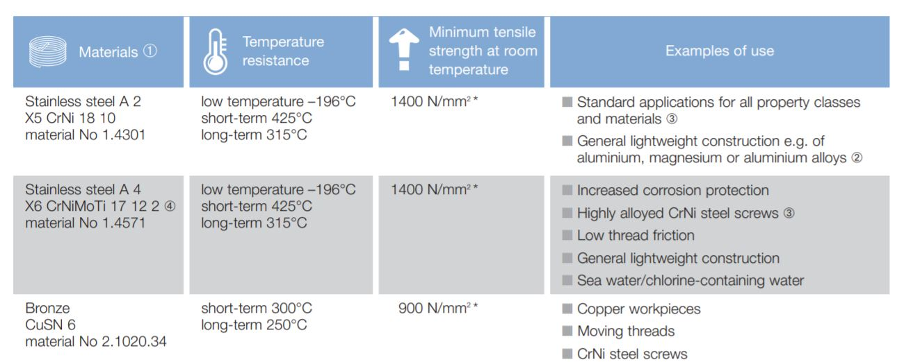

Ref : https://www.seeger-orbis.com/technology/about-seeger-rings/
https://www.dejond.com/_downloads/fast/schroefdraad/catHelicoil.pdf
Tin Bronze CuSn8, Material Number: 2.1020.34, DIN 17662 Although it has a high strength, this material has a lower elastic deformation than spring steel. Therefore, rings manufactured from this bronze tend toward plastic deformations in the higher-stress smaller dimensions; although, a tight fit in the groove is almost always guaranteed. In comparison with spring steel, this material's lower modulus of elasticity (115.000 N/mm²) results in a reduction in its load bearing capacity and its detaching speed. However, tin bronze is antimagnetic, and even at low temperatures, shows no tendencies towards embrittlement.
